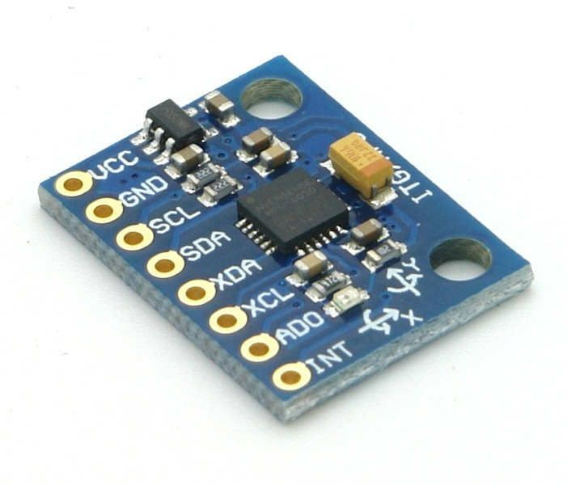

Accelerometer - MPU-6050

🔧 Basic Information
- Full Name: MPU-6050 (Motion Processing Unit)
- Type: 6-axis IMU (3-axis Accelerometer + 3-axis Gyroscope)
- Manufacturer: InvenSense (now part of TDK)
📦 Sensor Specifications
- Accelerometer:
- Axes: X, Y, Z
- Range: ±2g, ±4g, ±8g, ±16g
- Sensitivity (example for ±2g): 16,384 LSB/g
- Gyroscope:
- Axes: X, Y, Z
- Range: ±250°/s, ±500°/s, ±1000°/s, ±2000°/s
- Sensitivity (example for ±250°/s): 131 LSB/(°/s)
🔌 Communication
- Interface: I2C (Inter-Integrated Circuit)
- I2C Address: Default 0x68 (can be changed to 0x69 using AD0 pin)
- Voltage Levels:
- Operating Voltage: 3.3V (logic level)
- Can work with 5V systems via logic level shifter or breakout board
⚙️ Features
- DMP (Digital Motion Processor): Yes, for motion processing and sensor fusion
- Temperature Sensor: Built-in
- Interrupts: Configurable interrupt output (motion, data ready, FIFO overflow, etc.)
- Sampling Rate: Up to 1 kHz
- FIFO Buffer: 1024 bytes
🧠Data Output
- Accelerometer Output: Acceleration in X, Y, Z
- Gyroscope Output: Angular velocity in X, Y, Z
- Temperature Output: Raw temperature data
ğŸ› ï¸ Other Details
- Dimensions (module): Varies by breakout board (e.g., 20mm x 15mm)
- Common Libraries: MPU6050.h, Wire.h (I2C), and I2Cdev.h
- Typical Use: Tilt sensing, motion tracking, gesture recognition, drones, robotics
↠Back to Components